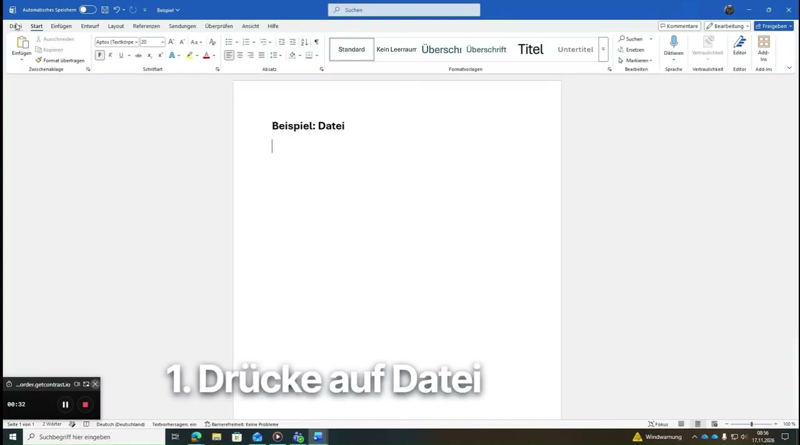
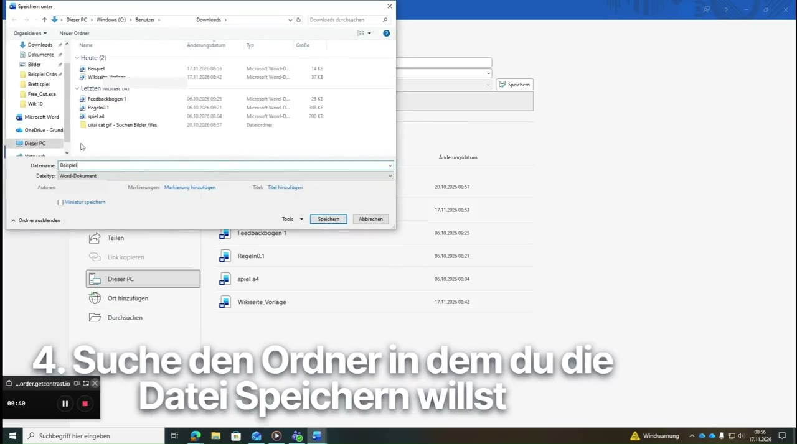
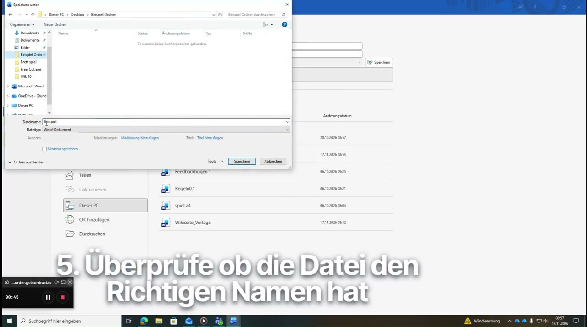
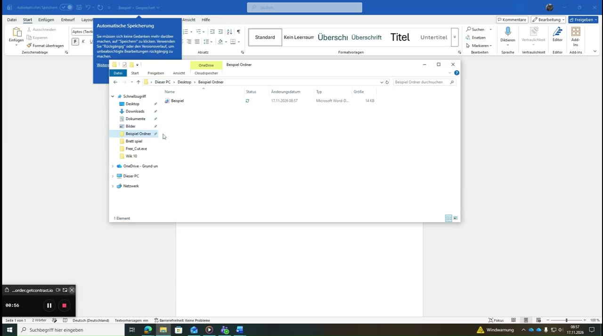

Datei speichern
Erklärvideo, 30 Sekunden, ohne Ton | |
| Bereich | Windows |
|---|---|
| Programm | Word (gilt auch für Excel und PowerPoint) |
| Tastenkürzel | Speichern unter: F12 Speichern: Strg + S |
| System | Windows 10 und 11 |
| Dauer | etwa 2 Minuten |
| Autor | KM |
| Fassung | v1, von der Lehrkraft ergänzt |
Speichern unter legt eine Datei an einem Ort ab, den du selbst bestimmst. So findest du sie später wieder. Im Video steht Word als Beispiel, in Excel und PowerPoint geht es genauso.
1 Anleitung
1. Drücke auf Datei
Klicke in Word oben links auf den Reiter Datei.


2. Drücke auf Speichern unter
Klicke im Menü links auf Speichern unter.

3. Drücke auf Durchsuchen
Klicke auf Durchsuchen. Ein neues Fenster öffnet sich.

4. Suche den Ordner
Klicke dich im Fenster zu dem Ordner durch, in dem die Datei liegen soll. Im Video ist das der „Beispiel Ordner“. Die Liste links hilft dir.


5. Überprüfe den Namen
Im Feld Dateiname steht der Name der Datei. Ändere ihn, wenn er nicht passt. Wie unsere Namen aussehen, steht auf der Seite Mitmachen.


6. Drücke auf Speichern
Klicke unten rechts auf Speichern.

7. Prüfe, ob die Datei im Ordner liegt
Öffne den Datei-Explorer und schau in den Ordner. Die Datei muss dort in der Liste stehen.


2 Typische Fehler und Tipps
- Falscher Ordner: Word schlägt oft den Ordner Downloads vor. Schau immer oben im Fenster nach, wo gespeichert wird, bevor du auf Speichern klickst.
- Datei nicht mehr gefunden? Klicke in Word auf Datei → Öffnen → Zuletzt verwendet. Dort stehen die Dateien, die du zuletzt benutzt hast.
- Speichern oder Speichern unter? Strg + S speichert die Datei an ihrem Ort und überschreibt die alte Fassung. Speichern unter legt sie neu ab, mit anderem Namen oder in einem anderen Ordner. Für eine neue Fassung (
_v2) nimmst du Speichern unter. - Schneller: Mit F12 öffnet sich Speichern unter sofort.